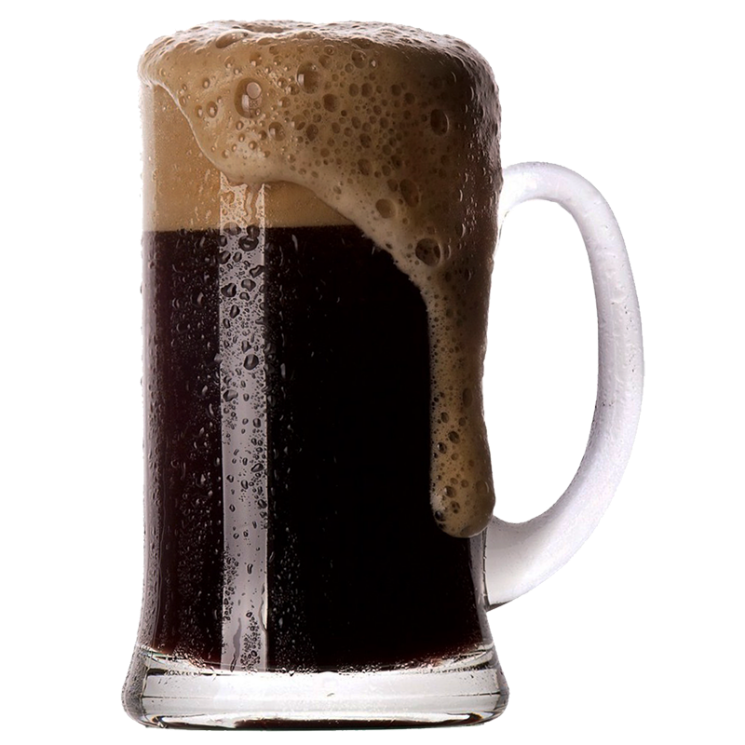

я люблю пиво
а ти?
наша команда шляхом довгих досліджень визначила, що споживання пива значно покращує ваш настрій
детальнішенаша команда шляхом довгих досліджень визначила, що споживання пива значно покращує ваш настрій
детальніше
Колись давно в далекому 2021 році шестеро, тоді ще незнайомих пошановувачів пива, вирішили подати свої документи в один університет, а точніше, у Львівський національний університет імені Івана Франка.
Перша їхня зустріч відбулася в Карпатах, на одному з найвизначніших івентів у житті студентів, посвяті. Їх об’єднали однакові вподобання, любов до пива та, як не дивно, програмування. Так розпочалась наша історія, завдяки якій вам зараз доступний даний проєкт.